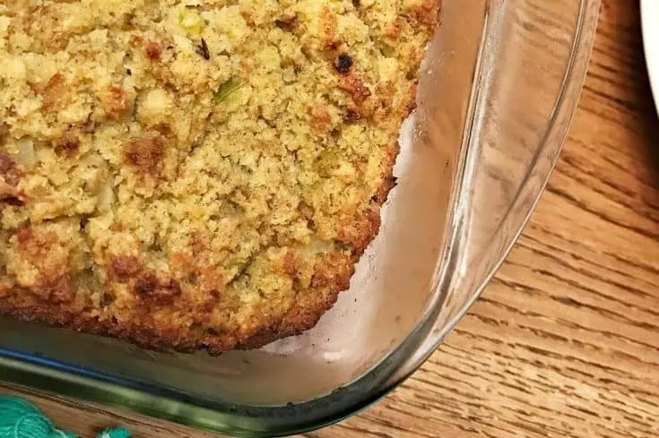

Cornbread stuffing

Have you ever tasted something that speaks to your soul? That makes you
think of home cooked comfort food? This cornbread stuffing will knock
your socks off and have you begging for thirds
Ingredients
- 1 skillet of cornbread
- 1 medium onion, finely chopped
- 4 stalks of celery, finely chopped
- 2 Tbsp butter
- 2 cans of cream of chicken soup
- 2 eggs
- 1 carton of chicken broth
- Seasonings
Steps
- Preheat oven to 350 degrees
- HAHA like I would give this recipe away for free
- I should do what my grandma used to do
- just leave one important ingredient out